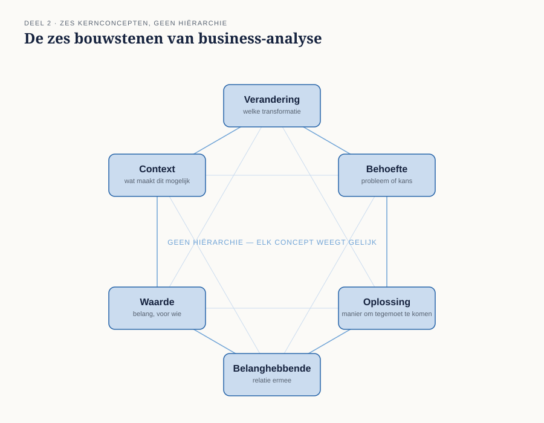
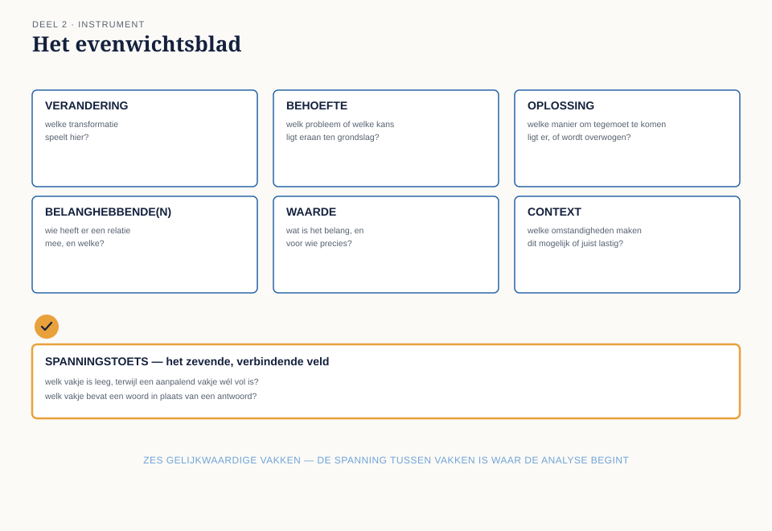

Cursus Businessanalyse · Niveau 1 (ECBA) · Deel 2 van 30
Het denkraam: zes kernconcepten.
In deel 1 bleef één veld van de veranderregel open: "welk verschil". Dit deel geeft daar het instrument bij: een denkraam van zes onderling afhankelijke begrippen — verandering, behoefte, oplossing, belanghebbende, waarde en context — waarmee u elke veranderingssituatie kunt ontleden. Met het evenwichtsblad en de spanningstoets maakt u zichtbaar welk begrip ontbreekt of te vaag is ingevuld, en sluit u bevinding B2: het beoogde verschil is bij WGP 2.0 nooit benoemd.
8secties
±2uleestijd + werkboek
6controlevragen
B2bevinding gesloten
Positionering. Deze cursus is een voorbereiding op het ECBA-examen van IIBA en uitdrukkelijk geen vervanging van het officiële examenmateriaal — A Guide to the Business Analysis Body of Knowledge (BABOK Guide) en The Business Analysis Standard, beide gratis te raadplegen via iiba.org. Alle formuleringen, figuren en werkvormen in dit materiaal zijn van Ductus; studeer voor het examen altijd óók de bron.
Niveau 1: ➊ Verandering mogelijk maken → ➋ Het denkraam: zes kernconcepten (hier) → ➌ Houding, principes en competenties → ➍ Rollen en benaderingen → ➎ Scope en impact → ➏ Behoefte eliciteren → ➐ Belanghebbenden → ➑ Oplossing → ➒ Waarde en context → ➓ Examentraining + capstone
01
Waar dit deel over gaat
⏱ 8 min
In deel 1 kwam u een veld tegen dat u nog niet goed kon invullen: welk verschil. Om dat veld recht te doen heeft u een denkraam nodig — een vaste set begrippen waarmee u elke veranderingssituatie kunt ontleden, ongeacht de sector, de omvang of de vorm van het werk.
Aan het eind van dit deel kunt u:
de zes kernconcepten van business-analyse benoemen en in eigen woorden uitleggen;
laten zien hoe die zes concepten elkaar onderling nodig hebben;
met het evenwichtsblad een situatie ontleden en vaststellen welk concept ontbreekt of te vaag is ingevuld;
uitleggen waarom een claim over waarde zonder benoemde belanghebbende feitelijk niets zegt.
Dit deel sluit bevinding B2: het beoogde verschil is nooit benoemd.
02
De casus: Merel leest het projectvoorstel terug
⏱ 8 min
Uit het casusdossier: de herstartgroep is gevormd, Merel begint met het dossier van WGP 2.0. Merel legt het projectvoorstel naast haar eigen veranderregel uit deel 1. Ze valt over een zin uit de doelstelling: "Meridiaan tilt haar dienstverlening naar een hoger niveau." Ze belt Ayla Demir, de informatieanalist die destijds aan WGP 2.0 werkte.
"Ik lees hier steeds over waarde — modern, klaar voor de toekomst, hoger niveau. Voor wie was dat eigenlijk waardevol?"
"Voor werkgevers, denk ik. Dat stond niet apart."
"En wat was hun probleem dan precies?"
"Dat weet ik niet. Dat stond er ook niet apart in."
Merel merkt iets op dat ze nog niet kan benoemen: er staat wél een oplossing en wél een claim over waarde, maar geen behoefte en geen belanghebbende om die waarde aan op te hangen. Dat gevoel — dat er iets ontbreekt zonder dat je meteen kunt zeggen wát — is precies waar dit deel een instrument voor geeft.
03
De zes kernconcepten
⏱ 18 min
Elke veranderingssituatie laat zich beschrijven met dezelfde zes begrippen. Dat is de kern van dit deel: niet zes losse definities om te onthouden, maar één denkraam dat overal toepasbaar is — bij een pensioenprogramma net zo goed als bij een fusie, een wetswijziging of een verbouwing.
Verandering — een transformatie die met opzet wordt uitgevoerd, als reactie op een behoefte. Een verandering heeft altijd een vorm: een project, een programma, doorlopende verbetering. De veranderregel uit deel 1 beschrijft een verandering.
Behoefte — een probleem of een kans die aanleiding geeft om iets te doen. Een behoefte kan uitgesproken zijn (Ruud Kalsbeek meldt vier keer per week dezelfde klacht) of latent (niemand heeft het opgemerkt, maar de cijfers laten het zien).
Oplossing — een specifieke manier om aan een of meer behoeften tegemoet te komen. Belangrijk: een oplossing is altijd een antwoord op iets. Zonder benoemde behoefte is "oplossing" een woord zonder betekenis, hoe concreet de oplossing zelf ook is.
Belanghebbende — ieder die een relatie heeft met de verandering, de behoefte of de oplossing: wie er last van heeft, wie erover beslist, wie ermee moet werken, wie het betaalt. Eén persoon kan meerdere van die relaties tegelijk hebben.
Waarde — het belang of het nut van iets, voor een specifieke belanghebbende, in een specifieke situatie. Waarde bestaat niet op zichzelf. Zij bestaat pas op het moment dat u kunt zeggen: waardevol voor wíe.
Context — de omstandigheden waarbinnen dit alles zich afspeelt en die het beïnvloeden: de organisatiecultuur, de bestaande systemen, de regelgeving, de markt, de mensen die er al zijn. Context verandert mee met wat u doet, en beïnvloedt tegelijk wat mogelijk is.

Figuur 2-1 — de zes kernconcepten als zes gelijkwaardige bouwstenen, geen hiërarchie
Waarom dit geen rijtje is
Het is verleidelijk deze zes concepten te lezen als een checklist die u één voor één afvinkt. Dat is niet de bedoeling, en het is ook niet hoe ze werken. Ze zijn onderling afhankelijk: elk concept krijgt pas betekenis in relatie tot de andere vijf.
Een oplossing zonder benoemde behoefte is een gok.
Een behoefte zonder benoemde belanghebbende is een vermoeden.
Waarde zonder benoemde belanghebbende is een loze uitspraak.
Een verandering zonder benoemde context loopt vast op iets wat iedereen al wist, behalve degene die de verandering bedacht.
Een belanghebbende zonder relatie tot een behoefte of oplossing hoort er waarschijnlijk niet bij, en zijn aanwezigheid op de lijst kost tijd die naar iemand anders had gemoeten.
Dat is de reden dat we dit een denkraam noemen en geen lijst: het is pas compleet als alle zes de begrippen op elkaar aansluiten voor dezelfde situatie.
Controlevraag
Uit Werkboek deel 2, Opdracht 2 — zes concepten in de e-mail van Pim Vroegop
1Pim Vroegop, teamleider Uitvoering Zwolle, mailt Merel: "bij ons komen wekelijks tussen de 30 en 45 correcties met terugwerkende kracht binnen [...] Het kost ons zo'n twintig minuten per correctie, vooral omdat we alles moeten narekenen." Welk kernconcept herkent u vooral in die laatste zin, en welk concept ontbreekt in de hele e-mail volledig?Toon antwoord
"Kost ons zo'n twintig minuten per correctie" is een concrete, telbare Behoefte. Oplossing ontbreekt volledig: Pim beschrijft alleen het probleem en vermengt dat niet met een oplossing — op zichzelf al waardevol. Belanghebbende is af te leiden uit Klantenservice (die doorzet) en Uitvoering/Pims team (die verwerkt); Waarde is impliciet (minder handmatig werk); Context is de harde systeemgrens op wijzigingen ouder dan het lopende kwartaal. Didactisch punt: een goed geïnformeerde collega past het denkraam vaak al onbewust toe — uw werk als analist is het expliciet en navolgbaar maken, niet het opnieuw uitvinden.
04
Wat er misgaat als het denkraam uit balans is
⏱ 16 min
Kijk terug naar het projectvoorstel van WGP 2.0. In de eigen woorden van het denkraam:
Concept
Wat er stond
Verandering
Vervanging van het werkgeversportaal — expliciet, duidelijk
Oplossing
Hetzelfde: het nieuwe portaal — expliciet, te expliciet zelfs
Waarde
"Modern", "gebruiksvriendelijk", "toekomstbestendig" — genoemd, maar niet aan iemand gekoppeld
Belanghebbende
Niet apart benoemd; werkgevers worden terloops genoemd, Uitvoering en Klantenservice helemaal niet
Behoefte
Ontbreekt volledig
Context
Terloops: "dalende waardering" — geen cijfer, geen bron, geen vergelijking
Vier van de zes vakjes zijn leeg, vaag of losstaand ingevuld. Twee vakjes — Verandering en Oplossing — zijn overvol ingevuld, tot op schermniveau. Dat scheve beeld ís bevinding B2: er werd uitvoerig over de oplossing gesproken en nauwelijks over de behoefte die haar zou moeten rechtvaardigen.
Dit patroon is zo herkenbaar dat het een naam verdient: de oplossing verdringt de rest van het denkraam. Zodra een oplossing eenmaal is uitgesproken, gaat alle aandacht daarheen, en de andere vijf concepten — vooral behoefte en belanghebbende — blijven onderbelicht. Het is een directe voortzetting van wat u in deel 1 leerde over probleem versus oplossing, nu toegepast op alle zes de concepten tegelijk.
Controlevragen
Uit Werkboek deel 2, Opdracht 1 — het evenwichtsblad invullen voor WGP 2.0
1Vul, op basis van dossierstuk 1-A (deel 1) en de klanttevredenheidsmeting uit het projectvoorstel, het evenwichtsblad in voor WGP 2.0. Welk vakje is geheel leeg, en welk vakje bevat wél een cijfer maar is toch niet goed onderbouwd?Toon antwoord
Behoefte is geheel leeg — er staat alleen "dalende waardering", en dat is context, geen behoefte. Context bevat het cijfer 6,2 (vraag 14 van de klanttevredenheidsmeting, "ik kan mijn zaken bij Meridiaan makkelijk online regelen", n=340), maar dat cijfer is zelf niet goed onderbouwd: de respondenten zijn alleen geworven onder werkgevers met meer dan 100 medewerkers, en van de 210 uitgenodigde grote werkgevers kwamen 340 reacties binnen doordat sommigen namens meerdere loonadministraties invulden. De context is dus schijnbaar concreet, maar feitelijk net zo vaag als de rest.
2Voer de spanningstoets uit op dit evenwichtsblad: benoem minimaal twee spanningen.Toon antwoord
Oplossing is uitgewerkt tot op detailniveau, terwijl Behoefte volledig leeg is — het scherpste voorbeeld van "de oplossing verdringt de rest van het denkraam". En Waarde is rijkelijk ingevuld ("modern", "gebruiksvriendelijk", "toekomstbestendig"), maar geen enkele waardeclaim is aan een concrete belanghebbende gekoppeld — dit is bevinding B2 in het klein.
05
De werkvorm: het evenwichtsblad
⏱ 20 min
Het instrument van dit deel is het evenwichtsblad: een blad met zes vakken, één per kernconcept, met een vaste laatste stap die het verschil maakt.
Het blad
Zes vakken, in willekeurige volgorde in te vullen zodra u iets weet:
De zes vakken
Verandering — welke transformatie speelt hier? Behoefte — welk probleem of welke kans ligt eraan ten grondslag? Oplossing — welke manier om daaraan tegemoet te komen ligt er, of wordt overwogen? Belanghebbende(n) — wie heeft er een relatie mee, en welke? Waarde — wat is het belang, en voor wie precies? Context — welke omstandigheden maken dit mogelijk of juist lastig?
En dan de stap die het verschil maakt:
Spanningstoets
Welk vakje is leeg, terwijl een aanpalend vakje wél vol is? Welk vakje bevat een woord in plaats van een antwoord?
Waarom de spanningstoets het werk doet
Het invullen van de zes vakken is niet moeilijk — iedereen kan er iets in schrijven. De spanningstoets is waar de analyse plaatsvindt: u gaat op zoek naar de plekken waar het denkraam niet in evenwicht is, en dat zijn precies de plekken waar een project als WGP 2.0 kan ontsporen zonder dat iemand het tijdig merkt.
Drie herkenbare spanningen, telkens met het voorbeeld uit de casus:
Oplossing vol, Behoefte leeg — het patroon van bevinding B1, nu zichtbaar gemaakt op het blad zelf.
Waarde vol, Belanghebbende leeg — "modern" en "toekomstbestendig" zonder dat er staat voor wie. Dit is precies bevinding B2.
Belanghebbende vol, Behoefte of Oplossing leeg — iemand staat op de lijst zonder dat duidelijk is waarom; vaak een teken dat er een belanghebbende is vergeten die er wél toe doet, en een verkeerde als plaatsvervanger is genomen. Bij WGP 2.0: de drie grote werkgevers stonden erbij, de vierduizend kleine niet.

Figuur 2-2 — het evenwichtsblad met de zes vakken en de spanningstoets als zevende, verbindende stap
Een ingevuld voorbeeld
Merels evenwichtsblad voor de herstart, na haar gesprek met Ayla:
Vak
Inhoud
Verandering
Werkgevers met minder dan vijftig medewerkers voeren correcties zelf in
Behoefte
Correcties met terugwerkende kracht kunnen nu niet via het portaal; ze komen bij Klantenservice terecht
Oplossing
Nog niet gekozen — daar gaat deel 8 over
Belanghebbende
Kleine werkgevers (voeren in), Klantenservice werkgevers (nu belast), Uitvoering (controleert)
Waarde
Voor kleine werkgevers: geen telefoontje nodig. Voor Klantenservice: tijd voor andere vragen
Context
Bestaand portaal, bestaande controleprocedure bij Uitvoering, komende Wtp-transitie
De spanningstoets levert hier iets belangrijks op: het vak Oplossing is leeg, en dat is juist goed. Op dit punt in het proces hoort er nog geen oplossing te staan — die komt pas na de behoefte-analyse in deel 6 en de afweging in deel 8. Een leeg vakje is niet altijd een fout; het is een fout zodra het vakje leeg is terwijl er al wél over wordt gesproken alsof het vaststaat.
Controlevraag
Uit Werkboek deel 2, Opdracht 3 — waarde zonder belanghebbende opsporen
1Beoordeel deze twee uitspraken uit de oefening: (1) "Dit maakt het proces efficiënter." (5) "Het systeem wordt overzichtelijker." Ontbreekt er een belanghebbende, en zo ja, wat is daaraan bijzonder?Toon antwoord
Bij beide ontbreekt een belanghebbende. (1) Efficiënter voor wie? Herformulering: "Klantenservice werkgevers besteedt minder tijd aan routinematige correcties." (5) "Overzichtelijker" is bovendien geen waarde op zich maar een kenmerk van de oplossing — vergelijkbaar met "gebruiksvriendelijk" uit deel 1.
06
Terug naar de veranderregel
⏱ 12 min
Met dit denkraam kunt u het vijfde veld van de veranderregel uit deel 1 nu goed invullen. "Welk verschil" was daar een open veld; nu weet u dat het antwoord waarde voor een benoemde belanghebbende moet zijn, nooit waarde in het algemeen.
Vergelijk:
Zwak: "zodat de dienstverlening verbetert" — waarde zonder belanghebbende, exact het WGP 2.0-patroon.
Sterk: "zodat kleine werkgevers niet meer hoeven te bellen voor een correctie" — waarde, met naam en toenaam.
De twee werkvormen versterken elkaar: de veranderregel dwingt tot één scherpe zin, het evenwichtsblad dwingt tot volledigheid over de zes concepten die daarachter zitten. Vanaf deel 5 gebruikt u ze naast elkaar.
Controlevraag
Uit Werkboek deel 2, Opdracht 4 — het eigen evenwichtsblad
1Vul, voortbouwend op uw veranderregel uit deel 1, een compleet evenwichtsblad in voor de herstart (Behoefte: 30-45 correcties per week komen nu handmatig bij Uitvoering terecht, kosten ~20 min per stuk). Het vak Oplossing blijft leeg. Is dat een spanning, of niet?Toon antwoord
Dat vak is terecht leeg: er is nog geen behoefte-analyse (deel 6) of afweging (deel 8) geweest. Dit is het onderscheid dat dit deel oefent: een terecht leeg vakje omdat het nog te vroeg is, versus een leeg vakje dat een echte spanning aangeeft omdat er al wél over wordt gesproken alsof het vaststaat.
07
Wat het examen hierover vraagt
⏱ 14 min
Dit deel dekt activiteit 1.2 van domein 1: de zes kernconcepten beschrijven, uitleggen hoe ze samenhangen, en ze gebruiken om gestructureerd te denken. Verwacht examenvragen die:
een korte situatieschets geven en vragen welk kernconcept ontbreekt of onderbelicht is;
vragen om twee concepten met elkaar in verband te brengen (bijvoorbeeld: welke waarde hoort bij welke belanghebbende);
een uitspraak voorleggen die klinkt als een van de zes concepten, maar het net niet is (een wens die klinkt als een behoefte, een kenmerk dat klinkt als context).
Let op de valkuil
Op het examen wordt soms een concept genoemd zonder dat het woord er letterlijk bij staat. Herken het concept aan wat er beschreven wordt, niet aan het woord.
Begrippenlijst, vervolg
Nederlands
Engels
kernconcept
core concept
denkraam
conceptual framework
in evenwicht / balans
in balance
latent (van een behoefte)
latent
gerealiseerd (van waarde)
realized
potentieel (van waarde)
potential
08
Terug naar de casus
⏱ 10 min
Bevinding B2 — het beoogde verschil is nooit benoemd — is nu preciezer te maken dan in de post-mortem zelf stond. Het probleem was niet dat er geen woorden voor waarde werden gebruikt; die woorden stonden er volop. Het probleem was dat waarde nooit aan een belanghebbende werd opgehangen, en dat behoefte helemaal ontbrak. Met het evenwichtsblad is dat in één oogopslag zichtbaar te maken — precies het gereedschap dat de stuurgroep in maand 1 had kunnen gebruiken om de vraag te stellen die niemand stelde.
Vooruit naar deel 3. Het denkraam ligt er nu. Maar een denkraam gebruikt u pas goed als u ook weet vanuit welke houding u het toepast — en dat is precies waar het bij Ayla Demir aan schortte: zij had het instrument misschien wel gekend, maar niet de overtuiging dat het haar taak was om het te gebruiken. Deel 3 gaat over die houding.
Controlevraag
Uit Werkboek deel 2, Opdracht 5 — B2 sluiten
1Het projectvoorstel van WGP 2.0 gebruikte wél woorden als "waarde", "verbetering" en "toekomstbestendig". Waarom telt dat, volgens het denkraam van dit deel, toch niet als een benoemd verschil?Toon antwoord
Woorden als "waarde" of "verbetering" beschrijven een type concept, maar zeggen niets zolang ze niet aan een specifieke belanghebbende zijn gekoppeld. "Modern" en "toekomstbestendig" zijn eigenschappen van de oplossing, voorgesteld alsof ze vanzelf waarde zijn — maar waarde bestaat pas op het moment dat u kunt zeggen voor wie, en wat die persoon er concreet aan heeft. Zonder die koppeling is het geen benoemd verschil, maar een aanname die iedereen anders mag invullen — precies wat er bij WGP 2.0 gebeurde.
Verder naar deel 3
Deel 3 gaat over de houding en principes die u nodig heeft om het denkraam ook daadwerkelijk toe te passen — en over de eigen competenties die daarbij horen.